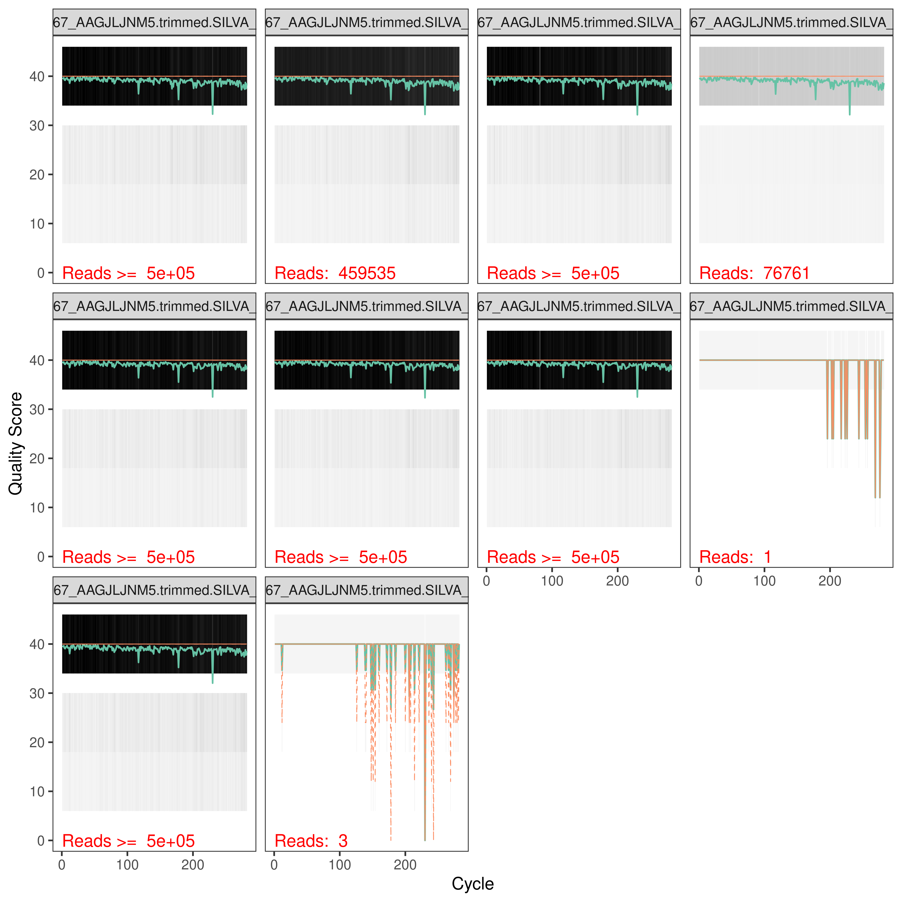
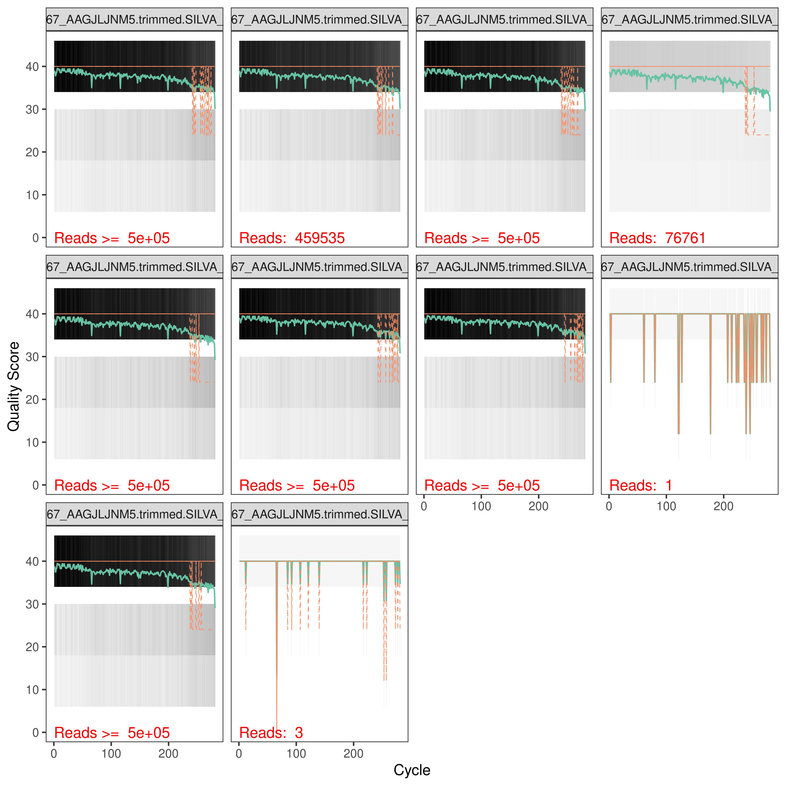
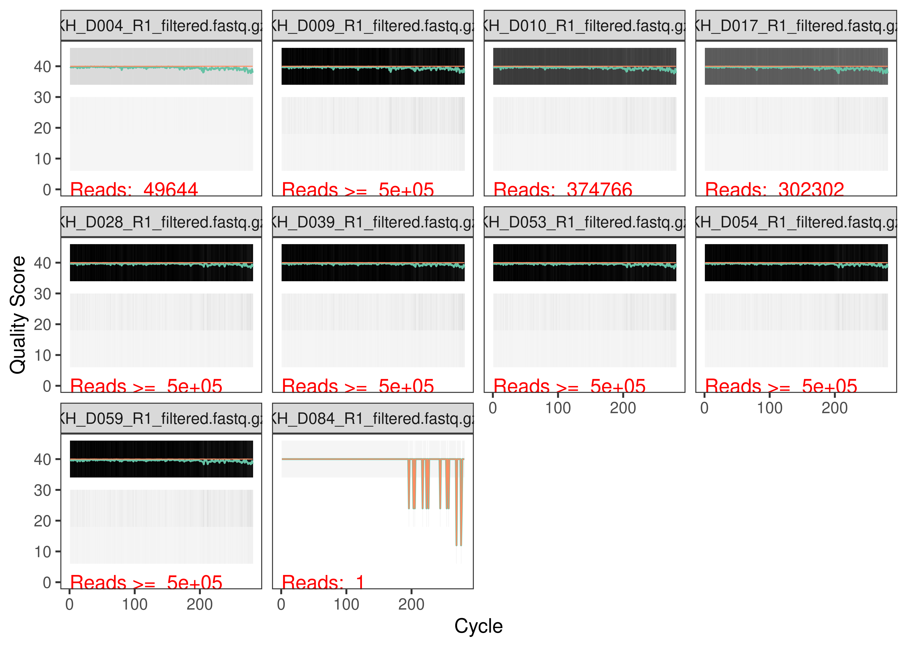
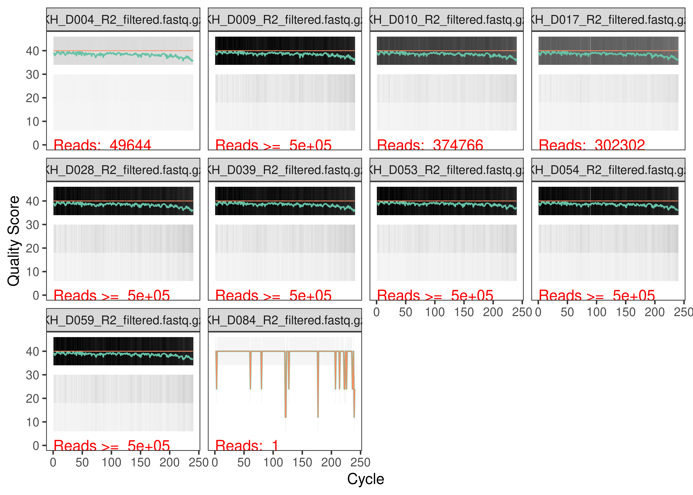
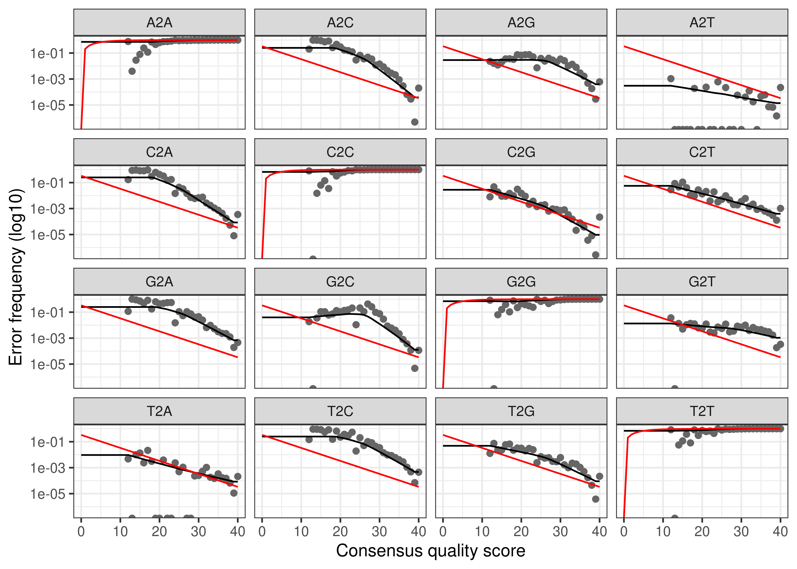
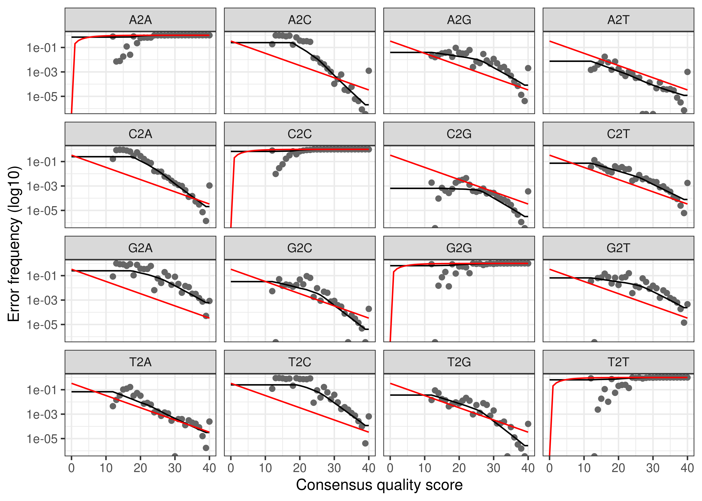
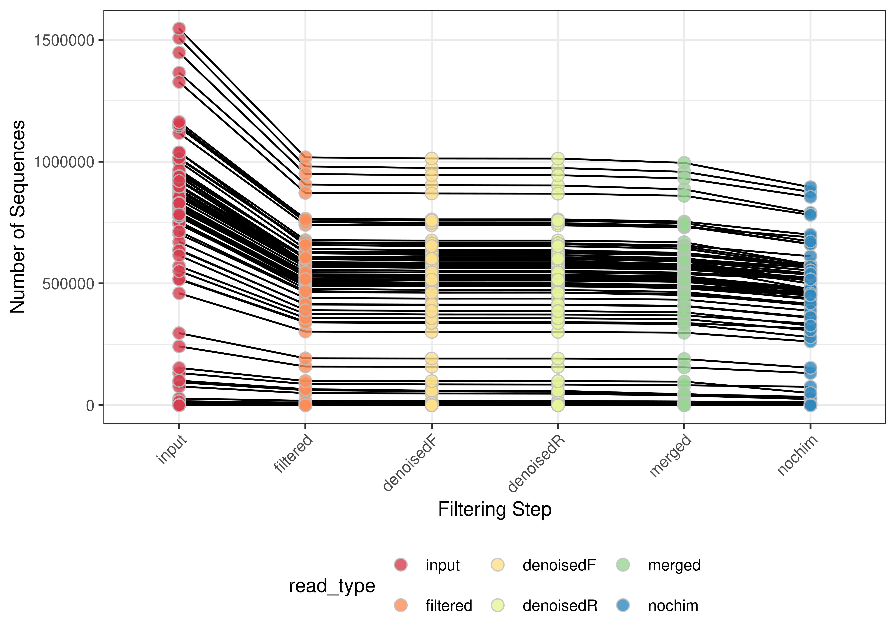
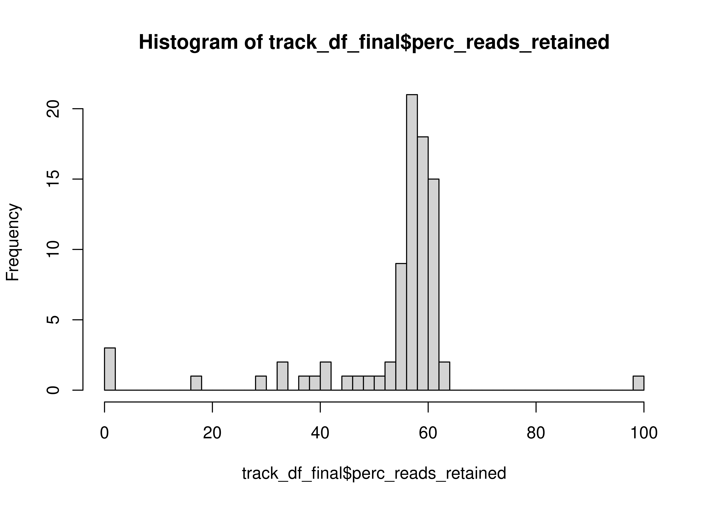
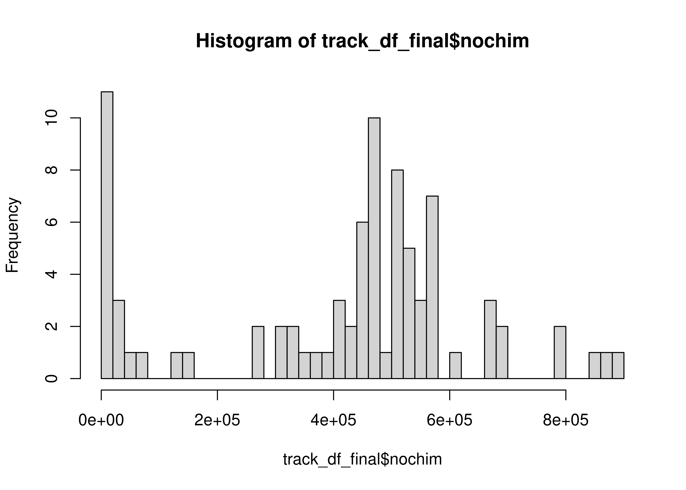

# Efficient loading of the packages
pacman::p_load(patchwork, dada2, tidyverse, install = FALSE)
# Load in the colors and shapes
source("code/R/plotting_aesthetics.R")
# Handy function to get slack message when jobs are done
source("code/R/notify_me.R")Denoising Prokaryotic Reads
Loading packages
Set the path to the seq files
# Find eukaryotic files
path <- "data/mcnichol-bbsplit/02-PROKs"
files <- list.files(path, ".fastq.gz")
head(files)[1] "Plate01_A01_KH_D001_10480167_AAGJLJNM5.trimmed.SILVA_132_PROK.cdhit95pc_1.fastq.gz"
[2] "Plate01_A01_KH_D001_10480167_AAGJLJNM5.trimmed.SILVA_132_PROK.cdhit95pc_2.fastq.gz"
[3] "Plate01_A02_KH_D009_10480167_AAGJLJNM5.trimmed.SILVA_132_PROK.cdhit95pc_1.fastq.gz"
[4] "Plate01_A02_KH_D009_10480167_AAGJLJNM5.trimmed.SILVA_132_PROK.cdhit95pc_2.fastq.gz"
[5] "Plate01_A03_KH_D017_10480167_AAGJLJNM5.trimmed.SILVA_132_PROK.cdhit95pc_1.fastq.gz"
[6] "Plate01_A03_KH_D017_10480167_AAGJLJNM5.trimmed.SILVA_132_PROK.cdhit95pc_2.fastq.gz"length(files)[1] 170We have 170 files, for which the key piece is the KH_D*** value, which corresponds to the DNA_ID in the Schmidt Lab Data Log. These reads have already had their primers trimmed off and been separated from eukaryotic reads from the same sample.
Load in Forward and Reverse reads and assess the quality
# 1. Forward read variable
forward_reads <-
list.files(path,
pattern = "_1.fastq.gz",
full.names = TRUE)
reverse_reads <-
list.files(path,
pattern = "_2.fastq.gz",
full.names = TRUE)
sample_names <-
data.frame(
bname = basename(forward_reads)
) %>%
separate_wider_delim(bname, delim = "_", names_sep = "_", too_few = "align_start") %>%
transmute(sample_name = paste(bname_3, bname_4, sep = "_")) %>%
pull()
filtered_filepaths_forward <-
file.path("data", "01b_Prokaryotic_Denoising", "filtered", paste0(sample_names, "_R1_filtered.fastq.gz"))
filtered_filepaths_reverse <-
file.path("data", "01b_Prokaryotic_Denoising", "filtered", paste0(sample_names, "_R2_filtered.fastq.gz"))
# Show the quality of each base on the reads
set.seed(314)
random_plots <- sample(1:85, size = 10)
#
# forward_qual_plots <-
# plotQualityProfile(forward_reads[random_plots])
#
# reverse_qual_plots <-
# plotQualityProfile(reverse_reads[random_plots])
#
#
# write_rds(forward_qual_plots,
# file = "data/01b_Prokaryotic_Denoising/forward_qual_plots.rds",
# compress = "gz")
#
# write_rds(reverse_qual_plots,
# file = "data/01b_Prokaryotic_Denoising/reverse_qual_plots.rds",
# compress = "gz")
forward_qual_plots <- read_rds("data/01b_Prokaryotic_Denoising/forward_qual_plots.rds")
reverse_qual_plots <- read_rds("data/01b_Prokaryotic_Denoising/reverse_qual_plots.rds")
forward_qual_plots
reverse_qual_plots
Filter and Trim
set.seed(314)
# filtered_outs <-
# filterAndTrim(forward_reads,
# filtered_filepaths_forward,
# reverse_reads,
# filtered_filepaths_reverse,
# truncLen = c(281,240),
# trimLeft = c(0,0),
# maxN = 0,
# maxEE = c(2,2),
# truncQ = 2,
# rm.phix = TRUE,
# compress = TRUE,
# multithread = 30
# )
#
#
# write_rds(filtered_outs,
# file = "data/01b_Prokaryotic_Denoising/filtered_outs.rds",
# compress = "gz")
filtered_outs <- read_rds("data/01b_Prokaryotic_Denoising/filtered_outs.rds")
filtered_outs %>%
as.data.frame() %>%
summarize(Median_Reads_In = median(reads.in),
Median_Reads_Out = median(reads.out),
Median_Reads_Removed = Median_Reads_In - Median_Reads_Out,
Percent_Removed = Median_Reads_Removed / Median_Reads_In) Median_Reads_In Median_Reads_Out Median_Reads_Removed Percent_Removed
1 803104 528257 274847 0.3422309We drop a lot of reads from each sequencing run - this seems to be a very common fact of NextSeq sequencing, which is important to remember for future sequencing runs.
Did we lose any samples?
filtered_outs %>%
as.data.frame() %>%
filter(reads.out == 0) %>%
rownames() %>%
str_remove("R1.fastq.gz")[1] "Plate01_F12_Blank06_10480167_AAGJLJNM5.trimmed.SILVA_132_PROK.cdhit95pc_1.fastq.gz"
[2] "Plate01_H03_KH_D024_10480167_AAGJLJNM5.trimmed.SILVA_132_PROK.cdhit95pc_1.fastq.gz"new_filtered_filepaths_forward <-
filtered_filepaths_forward[!str_detect(filtered_filepaths_forward, pattern = "Blank06_10480167|KH_D024")]
new_filtered_filepaths_reverse <-
filtered_filepaths_reverse[!str_detect(filtered_filepaths_reverse, pattern = "Blank06_10480167|KH_D024")]# filt_forward_qual_plots <-
# plotQualityProfile(new_filtered_filepaths_forward[random_plots])
#
# filt_reverse_qual_plots <-
# plotQualityProfile(new_filtered_filepaths_reverse[random_plots])
#
#
# write_rds(filt_forward_qual_plots,
# file = "data/01b_Prokaryotic_Denoising/filt_forward_qual_plots.rds",
# compress = "gz")
#
# write_rds(filt_reverse_qual_plots,
# file = "data/01b_Prokaryotic_Denoising/filt_reverse_qual_plots.rds",
# compress = "gz")
filt_forward_qual_plots <- read_rds("data/01b_Prokaryotic_Denoising/filt_forward_qual_plots.rds")
filt_reverse_qual_plots <- read_rds("data/01b_Prokaryotic_Denoising/filt_reverse_qual_plots.rds")
filt_forward_qual_plots
filt_reverse_qual_plots
Generate an error model
# Learn errors
source("code/R/loess_error.R")
# This function is from here: worth reading in its entirety
# https://github.com/benjjneb/dada2/issues/1307
# There has been active discussion the past few months that binned quality scores need to use many more bases than continuous quality scores to prevent spurious ASVs.
# https://github.com/benjjneb/dada2/issues/1307
# As such, I'm bumping up my nbases all the way to 1e9, which seems crazy but hopefully only need to run once. I also remove all blanks from the error model.
# error_models_forward <-
# learnErrors(new_filtered_filepaths_forward,
# multithread = 30,
# verbose = FALSE,
# errorEstimationFunction = loessErrfun_mod4,
# nbases = 1e9
# )
# notify_me(exists("error_models_forward"), "forward_finished")
# error_models_reverse <-
# learnErrors(new_filtered_filepaths_reverse,
# multithread = 30,
# verbose = FALSE,
# errorEstimationFunction = loessErrfun_mod4,
# nbases = 1e9
# )
# notify_me(exists("error_models_reverse"), "reverse_finished")
# write_rds(error_models_forward, file = "data/01b_Prokaryotic_Denoising/error_models_forward.rds")
# write_rds(error_models_reverse, file = "data/01b_Prokaryotic_Denoising/error_models_reverse.rds")
error_models_forward <- read_rds("data/01b_Prokaryotic_Denoising/error_models_forward.rds")
error_models_reverse <- read_rds("data/01b_Prokaryotic_Denoising/error_models_reverse.rds")
# Plot the errors
# the estimated error rates (black line) are a good fit to the observed rates (points), and the error rates drop with increased quality as expected
plotErrors(error_models_forward,
nominalQ = TRUE)
plotErrors(error_models_reverse,
nominalQ = TRUE)
Predicted error hews fairly close to observed error, which is good.
Inferring ASVs on the forward and reverse sequences
# dada_forwards <-
# dada(new_filtered_filepaths_forward,
# err = error_models_forward,
# multithread = 30)
#
# notify_me(exists("dada_forwards"), message = "Forward done")
#
# dada_reverses <-
# dada(new_filtered_filepaths_reverse,
# err = error_models_reverse,
# multithread = 30)
#
# notify_me(exists("dada_reverses"), message = "Reverse done")
#
# write_rds(dada_forwards,
# file = "data/01b_Prokaryotic_Denoising/dada_forwards.rds",
# compress = "gz")
#
# write_rds(dada_reverses,
# file = "data/01b_Prokaryotic_Denoising/dada_reverses.rds",
# compress = "gz")
dada_forwards <- read_rds("data/01b_Prokaryotic_Denoising/dada_forwards.rds")
dada_reverses <- read_rds("data/01b_Prokaryotic_Denoising/dada_reverses.rds")Merge forward and reverse ASVs
# merged_amplicons <-
# mergePairs(dada_forwards,
# new_filtered_filepaths_forward,
# dada_reverses,
# new_filtered_filepaths_reverse,
# verbose = FALSE)
# notify_me(exists("merged_amplicons"), "We merged")
# write_rds(merged_amplicons,
# file = "data/01b_Prokaryotic_Denoising/merged_amplicons.rds",
# compress = "gz")
merged_amplicons <- read_rds("data/01b_Prokaryotic_Denoising/merged_amplicons.rds")Generate a count table!
seqtabs <- makeSequenceTable(merged_amplicons)
# Let's look at the sequence distributions for each run to confirm they're similar
seqtabs %>%
getSequences %>%
nchar %>%
table %>%
sort.
282 283 284 287 288 296 302 309 314 316 317 326 330
1 1 1 1 1 1 1 1 1 1 1 1 1
332 336 342 345 347 350 351 397 401 402 403 405 412
1 1 1 1 1 1 1 1 1 1 1 1 1
413 425 428 429 432 433 438 447 457 470 477 489 298
1 1 1 1 1 1 1 1 1 1 1 1 2
299 306 318 320 327 329 340 349 354 389 391 404 407
2 2 2 2 2 2 2 2 2 2 2 2 2
424 439 442 452 487 499 300 311 313 352 356 358 390
2 2 2 2 2 2 3 3 3 3 3 3 3
396 409 416 476 490 498 335 392 395 399 414 437 301
3 3 3 3 3 3 4 4 4 4 4 4 5
303 310 353 355 387 393 410 294 360 448 383 388 398
5 5 5 5 5 5 5 6 6 6 7 7 7
386 394 479 357 281 385 384 361 382 362 363 380 381
8 8 10 11 12 13 15 17 25 35 44 60 70
364 379 365 377 367 369 366 376 378 368 371 375 373
76 131 132 250 386 451 531 552 596 962 1105 1477 2233
370 372 374
3495 4596 12324 Okay so it looks like a majority of ASVs are length 253 and 254.
Check & Remove for Chimeras (Bimeras)
# Identify and remove chimeras
# seqtab_nochim <- removeBimeraDenovo(seqtabs,
# multithread = 60)
#
# write_rds(seqtab_nochim, file = "data/01b_Prokaryotic_Denoising/seqtab_nochim.rds")
seqtab_nochim <- read_rds("data/01b_Prokaryotic_Denoising/seqtab_nochim.rds")
asvs <- dim(seqtab_nochim)[2]
# What proportion of counts were removed?
chim_check <- sum(seqtab_nochim)/sum(seqtabs)
frac_removed <- (1-chim_check)*100We removed 1.352967% of reads when filtering for chimaeras.
Size Selection
I also want to get rid of ASVs that are too big.
asv_keeps <- nchar(getSequences(seqtab_nochim)) %in% c(370:375)
seqtab_nc_len <- seqtab_nochim[,asv_keeps]We removed all ASVs that weren’t size 252 or 253.
Track the sequences through the pipeline
# create a little function to identify number seqs
getN <- function(x) sum(getUniques(x))
dada_forward_reads <-
map_dbl(dada_forwards, getN)
dada_reverse_reads <-
map_dbl(dada_reverses, getN)
merged_reads <-
map_dbl(merged_amplicons, getN)
sum_filter_df <-
filtered_outs %>%
as.data.frame() %>%
rownames_to_column(var = "sample_name") %>%
separate_wider_delim(sample_name, delim = "_", names = c("A","B", "C", "D"), too_many = "drop") %>%
mutate(sample_name = paste(C,D, sep = "_")) %>%
group_by(sample_name) %>%
summarize(input = sum(reads.in),
filtered = sum(reads.out)) %>%
filter(filtered > 0)
# Make the table to track the seqs
new_sample_names <- new_filtered_filepaths_forward %>%
basename %>%
str_remove("_R1_filtered.fastq.gz")
stopifnot(new_sample_names == new_filtered_filepaths_reverse %>%
basename %>%
str_remove("_R2_filtered.fastq.gz"))
track_df <- data.frame(sample_name = new_sample_names) %>%
left_join(sum_filter_df) %>%
cbind(dada_forward_reads,
dada_reverse_reads,
merged_reads,
rowSums(seqtab_nc_len))
head(track_df) sample_name input filtered dada_forward_reads
KH_D001_R1_filtered.fastq.gz KH_D001 241601 158738 158174
KH_D009_R1_filtered.fastq.gz KH_D009 869027 573287 571578
KH_D017_R1_filtered.fastq.gz KH_D017 459535 302302 301175
KH_D025_R1_filtered.fastq.gz KH_D025 751735 493259 490103
KH_D032_R1_filtered.fastq.gz KH_D032 753166 495997 490076
KH_D040_R1_filtered.fastq.gz KH_D040 518358 342765 341346
dada_reverse_reads merged_reads
KH_D001_R1_filtered.fastq.gz 157756 155519
KH_D009_R1_filtered.fastq.gz 572130 566261
KH_D017_R1_filtered.fastq.gz 300956 297611
KH_D025_R1_filtered.fastq.gz 490271 484355
KH_D032_R1_filtered.fastq.gz 490094 480124
KH_D040_R1_filtered.fastq.gz 341240 337283
rowSums(seqtab_nc_len)
KH_D001_R1_filtered.fastq.gz 131823
KH_D009_R1_filtered.fastq.gz 513112
KH_D017_R1_filtered.fastq.gz 261488
KH_D025_R1_filtered.fastq.gz 454845
KH_D032_R1_filtered.fastq.gz 439695
KH_D040_R1_filtered.fastq.gz 314764# Change column names
colnames(track_df) <- c("DNA_ID" , "input", "filtered", "denoisedF", "denoisedR", "merged", "nochim")
rownames(track_df) <- track_df$DNA_ID
# Generate a plot to track the reads through our DADA2 pipeline
track_df %>%
pivot_longer(input:nochim, names_to = "read_type", values_to = "num_reads") %>%
#left_join(metadata, by = "sample_name") %>%
mutate(read_type = fct_relevel(read_type,
"input", "filtered", "denoisedF", "denoisedR", "merged", "nochim")) %>%
ggplot(aes(x = read_type, y = num_reads, fill = read_type)) +
#facet_grid(~strata) +
geom_line(aes(group = DNA_ID)) +
geom_point(shape = 21, size = 3, alpha = 0.8, color = "grey") +
scale_fill_brewer(palette = "Spectral") +
theme_bw() +
labs(x = "Filtering Step", y = "Number of Sequences") +
theme(legend.position = "bottom",
axis.text.x = element_text(angle = 45, vjust = 1, hjust = 1))
# make track dataframe and edit names to match metadata
track_df_final <- track_df %>%
mutate(perc_reads_retained = 100 * nochim / input)
hist(track_df_final$perc_reads_retained, breaks = 50)
hist(track_df_final$nochim, breaks = 50)
med_read_retained <- median(track_df_final$nochim)
med_perc_retained <- median(track_df_final$perc_reads_retained)
num_asvs <- ncol(seqtab_nc_len)Overall using the updated error model, we retained 4.74061^{5} reads and 57.8088694 % of reads. We inferred 18109 ASVs.
Prepare the data for export!
1. ASV Table
############## Modify the ASV names and then save a fasta file!
# Give headers more manageable names
# First pull the ASV sequences
asv_seqs <- colnames(seqtab_nc_len)
# make headers for our ASV seq fasta file, which will be our asv names
asv_headers <- vector(dim(seqtab_nc_len)[2], mode = "character")
# loop through vector and fill it in with ASV names
for (i in 1:dim(seqtab_nc_len)[2]) {
asv_headers[i] <- paste(">PROK", i, sep = "_")
}
# intitution check
head(asv_headers, 20) [1] ">PROK_1" ">PROK_2" ">PROK_3" ">PROK_4" ">PROK_5" ">PROK_6"
[7] ">PROK_7" ">PROK_8" ">PROK_9" ">PROK_10" ">PROK_11" ">PROK_12"
[13] ">PROK_13" ">PROK_14" ">PROK_15" ">PROK_16" ">PROK_17" ">PROK_18"
[19] ">PROK_19" ">PROK_20"##### Rename ASVs in table then write out our ASV fasta file!
asv_tab <- t(seqtab_nc_len)
## Rename our asvs!
row.names(asv_tab) <- sub(">", "", asv_headers)
#View(asv_tab)
# Write the count table to a file!
write.table(asv_tab, "data/01b_Prokaryotic_Denoising/ASV_counts.tsv", sep = "\t", quote = FALSE, col.names = NA)
# Write out the fasta file for reference later on for what seq matches what ASV
asv_fasta <- c(rbind(asv_headers, asv_seqs))
# Save to a file!
write(asv_fasta, "data/01b_Prokaryotic_Denoising/ASVs.fasta")
# And save our seqtab_nc_len R Object for taxonomic assignment
row.names(seqtab_nc_len) <- new_sample_names
save(seqtab_nc_len, file = "data/01b_Prokaryotic_Denoising/seqtab_nc_len.RData")
# And save our meta_track R object
save(track_df_final, file = "data/01b_Prokaryotic_Denoising/track_df_final.RData")devtools::session_info()─ Session info ───────────────────────────────────────────────────────────────
setting value
version R version 4.3.3 (2024-02-29)
os Rocky Linux 9.4 (Blue Onyx)
system x86_64, linux-gnu
ui X11
language (EN)
collate en_US.UTF-8
ctype en_US.UTF-8
tz America/New_York
date 2025-04-15
pandoc 3.1.1 @ /usr/lib/rstudio-server/bin/quarto/bin/tools/ (via rmarkdown)
quarto 1.3.450 @ /usr/lib/rstudio-server/bin/quarto/bin/quarto
─ Packages ───────────────────────────────────────────────────────────────────
! package * version date (UTC) lib source
abind 1.4-8 2024-09-12 [1] RSPM (R 4.3.3)
Biobase 2.62.0 2023-10-24 [1] Bioconductor
BiocGenerics 0.48.1 2023-11-01 [1] Bioconductor
BiocParallel 1.36.0 2023-10-24 [1] Bioconductor
Biostrings 2.70.3 2024-03-13 [1] Bioconductor 3.18 (R 4.3.3)
bitops 1.0-9 2024-10-03 [1] RSPM (R 4.3.3)
cachem 1.1.0 2024-05-16 [1] RSPM (R 4.3.3)
cli 3.6.4 2025-02-13 [1] RSPM (R 4.3.3)
P codetools 0.2-19 2023-02-01 [?] CRAN (R 4.3.3)
colorspace 2.1-1 2024-07-26 [1] RSPM (R 4.3.3)
crayon 1.5.3 2024-06-20 [1] RSPM (R 4.3.3)
dada2 * 1.30.0 2023-10-24 [1] Bioconductor
DelayedArray 0.28.0 2023-10-24 [1] Bioconductor
deldir 2.0-4 2024-02-28 [1] RSPM (R 4.3.3)
P devtools 2.4.5 2022-10-11 [?] CRAN (R 4.3.2)
digest 0.6.37 2024-08-19 [1] RSPM (R 4.3.3)
dplyr * 1.1.4 2023-11-17 [1] RSPM (R 4.3.3)
P ellipsis 0.3.2 2021-04-29 [?] CRAN (R 4.3.2)
evaluate 1.0.3 2025-01-10 [1] RSPM (R 4.3.3)
farver 2.1.2 2024-05-13 [1] RSPM (R 4.3.3)
fastmap 1.2.0 2024-05-15 [1] RSPM (R 4.3.3)
forcats * 1.0.0 2023-01-29 [1] RSPM (R 4.3.3)
fs 1.6.5 2024-10-30 [1] RSPM (R 4.3.3)
generics 0.1.3 2022-07-05 [1] RSPM (R 4.3.3)
GenomeInfoDb 1.38.8 2024-03-15 [1] Bioconductor 3.18 (R 4.3.3)
GenomeInfoDbData 1.2.11 2025-04-11 [1] Bioconductor
GenomicAlignments 1.38.2 2024-01-16 [1] Bioconductor 3.18 (R 4.3.3)
GenomicRanges 1.54.1 2023-10-29 [1] Bioconductor
ggplot2 * 3.5.2 2025-04-09 [1] RSPM (R 4.3.3)
glue 1.8.0 2024-09-30 [1] RSPM (R 4.3.3)
gtable 0.3.6 2024-10-25 [1] RSPM (R 4.3.3)
hms 1.1.3 2023-03-21 [1] RSPM (R 4.3.3)
htmltools 0.5.8.1 2024-04-04 [1] RSPM (R 4.3.3)
P htmlwidgets 1.6.4 2023-12-06 [?] CRAN (R 4.3.2)
P httpuv 1.6.15 2024-03-26 [?] CRAN (R 4.3.2)
hwriter 1.3.2.1 2022-04-08 [1] RSPM (R 4.3.3)
interp 1.1-6 2024-01-26 [1] RSPM (R 4.3.3)
IRanges 2.36.0 2023-10-24 [1] Bioconductor
jpeg 0.1-11 2025-03-21 [1] RSPM (R 4.3.3)
jsonlite 2.0.0 2025-03-27 [1] RSPM (R 4.3.3)
knitr 1.50 2025-03-16 [1] RSPM (R 4.3.3)
labeling 0.4.3 2023-08-29 [1] RSPM (R 4.3.3)
P later 1.4.2 2025-04-08 [?] RSPM (R 4.3.3)
P lattice 0.22-5 2023-10-24 [?] CRAN (R 4.3.3)
latticeExtra 0.6-30 2022-07-04 [1] RSPM (R 4.3.3)
lifecycle 1.0.4 2023-11-07 [1] RSPM (R 4.3.3)
lubridate * 1.9.4 2024-12-08 [1] RSPM (R 4.3.3)
magrittr 2.0.3 2022-03-30 [1] RSPM (R 4.3.3)
P Matrix 1.6-5 2024-01-11 [?] CRAN (R 4.3.3)
MatrixGenerics 1.14.0 2023-10-24 [1] Bioconductor
matrixStats 1.5.0 2025-01-07 [1] RSPM (R 4.3.3)
memoise 2.0.1 2021-11-26 [1] RSPM (R 4.3.3)
mime 0.13 2025-03-17 [1] RSPM (R 4.3.3)
P miniUI 0.1.1.1 2018-05-18 [?] CRAN (R 4.3.2)
munsell 0.5.1 2024-04-01 [1] RSPM (R 4.3.3)
P pacman 0.5.1 2019-03-11 [?] CRAN (R 4.3.2)
patchwork * 1.3.0 2024-09-16 [1] RSPM (R 4.3.3)
pillar 1.10.2 2025-04-05 [1] RSPM (R 4.3.3)
P pkgbuild 1.4.7 2025-03-24 [?] RSPM (R 4.3.3)
pkgconfig 2.0.3 2019-09-22 [1] RSPM (R 4.3.3)
P pkgload 1.4.0 2024-06-28 [?] CRAN (R 4.3.2)
plyr 1.8.9 2023-10-02 [1] RSPM (R 4.3.3)
png 0.1-8 2022-11-29 [1] RSPM (R 4.3.3)
P profvis 0.4.0 2024-09-20 [?] CRAN (R 4.3.2)
P promises 1.3.2 2024-11-28 [?] CRAN (R 4.3.2)
purrr * 1.0.4 2025-02-05 [1] RSPM (R 4.3.3)
R6 2.6.1 2025-02-15 [1] RSPM (R 4.3.3)
RColorBrewer 1.1-3 2022-04-03 [1] RSPM (R 4.3.3)
Rcpp * 1.0.14 2025-01-12 [1] RSPM (R 4.3.3)
RcppParallel 5.1.10 2025-01-24 [1] RSPM (R 4.3.3)
RCurl 1.98-1.17 2025-03-22 [1] RSPM (R 4.3.3)
readr * 2.1.5 2024-01-10 [1] RSPM (R 4.3.3)
P remotes 2.5.0 2024-03-17 [?] CRAN (R 4.3.2)
renv 1.0.3 2023-09-19 [1] CRAN (R 4.3.3)
reshape2 1.4.4 2020-04-09 [1] RSPM (R 4.3.3)
rlang 1.1.5 2025-01-17 [1] RSPM (R 4.3.3)
rmarkdown 2.29 2024-11-04 [1] RSPM (R 4.3.3)
Rsamtools 2.18.0 2023-10-24 [1] Bioconductor
rstudioapi 0.17.1 2024-10-22 [1] RSPM (R 4.3.3)
S4Arrays 1.2.1 2024-03-04 [1] Bioconductor 3.18 (R 4.3.3)
S4Vectors 0.40.2 2023-11-23 [1] Bioconductor 3.18 (R 4.3.3)
scales 1.3.0 2023-11-28 [1] RSPM (R 4.3.3)
P sessioninfo 1.2.3 2025-02-05 [?] RSPM (R 4.3.3)
P shiny 1.10.0 2024-12-14 [?] CRAN (R 4.3.2)
ShortRead 1.60.0 2023-10-24 [1] Bioconductor
SparseArray 1.2.4 2024-02-11 [1] Bioconductor 3.18 (R 4.3.3)
stringi 1.8.7 2025-03-27 [1] RSPM (R 4.3.3)
stringr * 1.5.1 2023-11-14 [1] RSPM (R 4.3.3)
SummarizedExperiment 1.32.0 2023-10-24 [1] Bioconductor
tibble * 3.2.1 2023-03-20 [1] RSPM (R 4.3.3)
tidyr * 1.3.1 2024-01-24 [1] RSPM (R 4.3.3)
tidyselect 1.2.1 2024-03-11 [1] RSPM (R 4.3.3)
tidyverse * 2.0.0 2023-02-22 [1] RSPM (R 4.3.3)
timechange 0.3.0 2024-01-18 [1] RSPM (R 4.3.3)
tzdb 0.5.0 2025-03-15 [1] RSPM (R 4.3.3)
P urlchecker 1.0.1 2021-11-30 [?] CRAN (R 4.3.2)
P usethis 3.1.0 2024-11-26 [?] CRAN (R 4.3.2)
vctrs 0.6.5 2023-12-01 [1] RSPM (R 4.3.3)
withr 3.0.2 2024-10-28 [1] RSPM (R 4.3.3)
xfun 0.52 2025-04-02 [1] RSPM (R 4.3.3)
P xtable 1.8-4 2019-04-21 [?] CRAN (R 4.3.2)
XVector 0.42.0 2023-10-24 [1] Bioconductor
yaml 2.3.10 2024-07-26 [1] RSPM (R 4.3.3)
zlibbioc 1.48.2 2024-03-13 [1] Bioconductor 3.18 (R 4.3.3)
[1] /local/workdir/arp277/AAM_ERI_2024/renv/library/R-4.3/x86_64-pc-linux-gnu
[2] /home/arp277/.cache/R/renv/sandbox/R-4.3/x86_64-pc-linux-gnu/fd835031
* ── Packages attached to the search path.
P ── Loaded and on-disk path mismatch.
──────────────────────────────────────────────────────────────────────────────